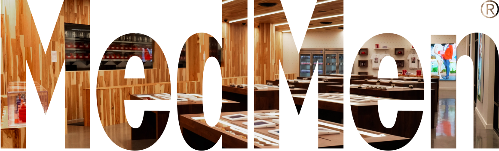

portfolio - New
UI Style Guide
MedMen Web UI
Cannabis Industry haven't had the standard UI/UX design before. Since Marijuana has been legalized for recreational purposes in certain states, they need to revamp website and build new App. Therfore, MedMen started to define their own user interface style guide at first to create digital products consistency. This is for internal use only so AWD (Adaptive Web Design) is good for MedMen design team.